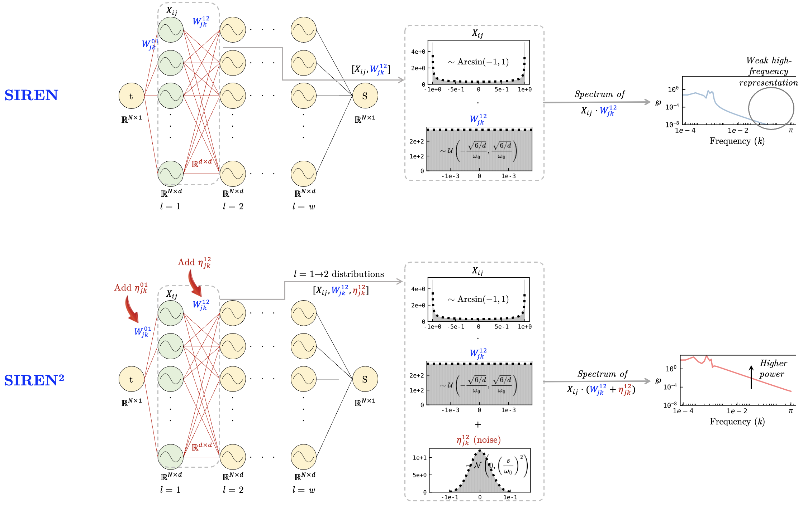

Preprint under review | v1:2025
Hemanth Chandravamsi, Dhanush V. Shenoy, Itay Zinn, Shimon Pisnoy, Steven H. Frankel
Technion - Israel Institute of Technology, Haifa, Israel, 3200003
Deep neural networks are known to exhibit a spectral learning bias, wherein low-frequency components are learned early in training, while high-frequency modes emerge more gradually in later epochs. However, when the target signal lacks low-frequency components and is dominated by broadband high frequencies, training suffers from a spectral bottleneck, and the model fails to reconstruct the entire signal, including the frequency components that lie within its representational capacity. We examine such a scenario in the context of implicit neural representation (INRs) with sinusoidal representation networks (SIRENs), focusing on the challenge of fitting high-frequency-dominant signals that are susceptible to spectral bottleneck. To address this, we propose a generalized target-aware weight perturbation scheme WINNER for network initialization. The scheme perturbs uniformly initialized weights with Gaussian noise, where the noise scales are adaptively determined by the spectral centroid of the target signal. We show that the noise scales can provide control over the spectra of network activations and the eigenbasis of the empirical neural tangent kernel. This method not only addresses the spectral bottleneck but also improves their accuracy, outperforming state-of-the-art approaches in audio fitting and achieving notable gains in image fitting and denoising. Beyond signal reconstruction, our approach opens new directions for adaptive initialization strategies in neural representation tasks.
@misc{chandravamsi2025spectral_bottleneck,
title = {Spectral Bottleneck in Deep Neural Networks: Noise is All You Need},
author = {Chandravamsi, Hemanth and Shenoy, Dhanush V. and Zinn, Itay and Pisnoy, Shimon and Frankel, Steven H.},
year = {2025},
note = {Preprint under review}
}